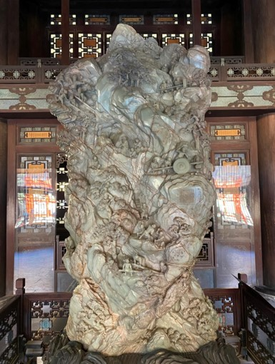
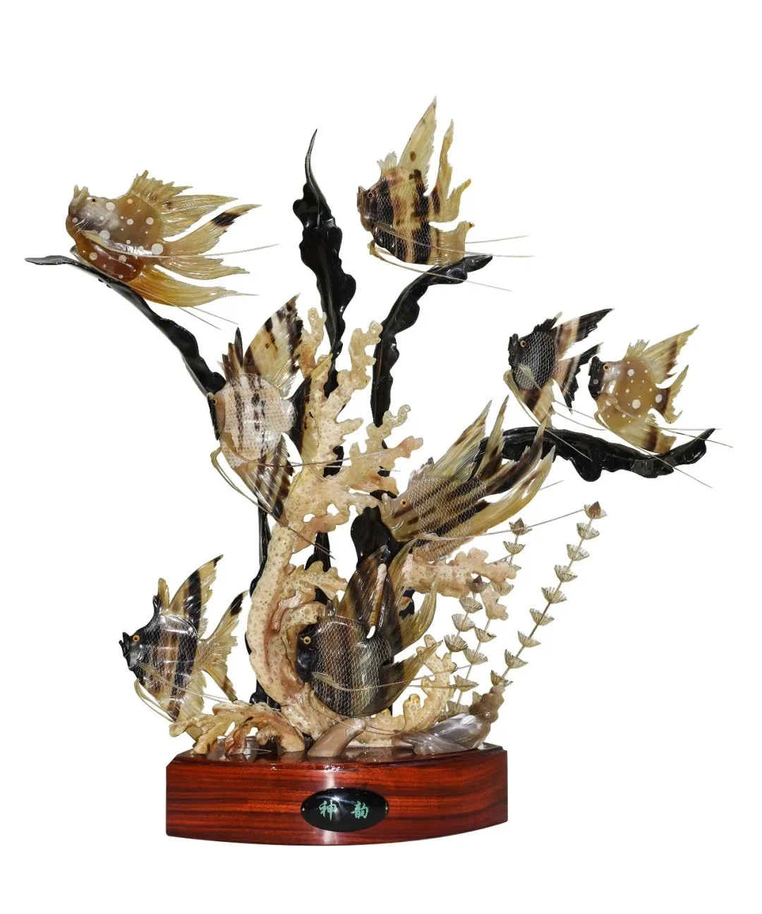
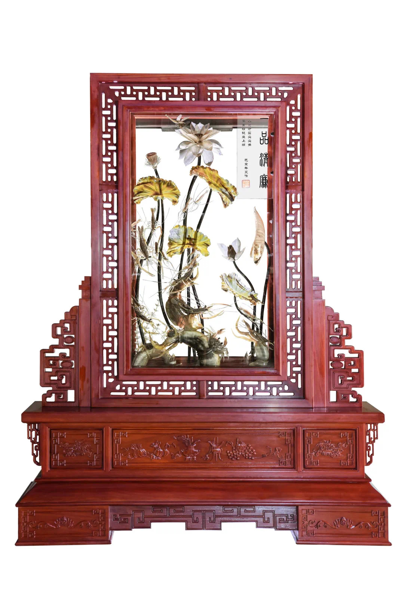

合浦角雕介绍
传承千年的非物质文化遗产

角雕
藏在角雕里的海丝遗韵，你见过吗？
在广西北海的合浦，有一种传承千年的技艺——合浦角雕，它以牛羊角为材，经艺人雕琢，成为一件件精美绝伦的艺术品，在非遗的舞台上熠熠生辉。
起源与发展
合浦角雕的历史，最早能追溯到宋代，当时民间就有使用牛角制作酒杯的习俗。明清时期，合浦角雕进一步发展，雕刻工艺与作品造型逐渐形成独特的艺术体系。清末民初，角雕以家庭作坊方式生产，有了明确传承谱系。到了20世纪90年代，更是形成较大产业规模，传承至今。
材料与工艺特点
合浦角雕之所以独特，离不开当地优质的原材料。合浦出产的黑、白水牛角厚薄均匀，利用率高，经雕刻打磨抛光后温润透亮，还有自然的颜色渐变，为角雕创作提供了先天优势。在制作工艺上，艺人采用立体圆雕为主，融合镂空、浮雕、镶嵌、平雕等多种技法，根据牛角硬中带韧、细则柔软、薄则透明、弯而不折的特点，结合其天然形态、纹理、色泽进行造型设计。制作工序繁多，从选料、开料、削坯，到精雕、打磨、抛光，再到热处理造型、镶嵌、过蜡、组装等，每一步都饱含着艺人的心血与智慧，有的部件甚至细如毛发、薄如蝉翼，工艺要求极高。


题材与艺术表现
在题材上，合浦角雕十分丰富，以水族生物见长，还有虾、蟹、鱼、鸟、虫、禽、兽、花、草、树等几百种题材。构图巧妙汲取国画虚实相间、疏密有致、大胆取舍、工意结合等手法，充满艺术感染力。不管是灵动的鱼虾，还是娇艳的花草，在艺人的刻刀下都栩栩如生。
传承与当代发展
2021年，合浦角雕入选第五批国家级非物质文化遗产代表性项目名录。如今，为了让这门古老技艺更好地传承下去，不少角雕艺人不断创新，将现代审美与传统技艺融合，创作出更符合当代人审美的作品；也有许多学校和机构开展角雕技艺培训课程，培养年轻一代对角雕的兴趣。
文化价值与期许
合浦角雕不仅是一门传统技艺，更是历史与文化的见证，承载着合浦人民的智慧与情感。希望大家有机会能亲眼欣赏这些精美的角雕作品，感受它独特的艺术魅力，让这颗非遗明珠永远闪耀！